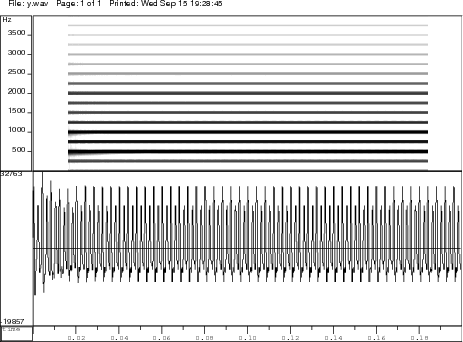

The objective of this experiment is to study/observe the relation between the parameters of a source-system based formant synthesizer and perception. This is achieved through construction of an all-pole filter using a given set of formant frequencies for vowel sounds. The all-pole system is excited with an excitation source signal constructed using the pitch information.

- Identify the various vowel sounds in a language.
- Record there various vowels in the context of hVd where V refers to vowels. Eg. heed, head, hod, hood.
- Note down the formant frequencies for the various sounds. Also note down the corresponding fundamental frequency.
- Build an all-pole filter using the formant frequencies.
- Generate an excitation signal using the fundamental frequency, with impulses spaced at the fundamental period.
- Excite the all pole filter with the excitation generated in the previous step.
- Observe how the formant frequencies affect perception

Synthesizing vowels
The objective of the experiment is to synthesize a vowel given its first three formant frequencies F1, F2, and F3, the fundamental period T0, and the sampling frequency Fs. The system used in the synthesis of vowels is an all pole filter as shown in Figure 1.

Figure 1: All-pole filter.
The tranfer function H(z) of the all-pole system is given by $$ H(z) = \frac{\sum^{M}_{k=0}{b_k z^{-k}}}{1+\sum^{N}_{k=1}{{a_k z^{-k}}}} \qquad (1) $$ Each of the formant frequencies correspond to a resonance that can be generated by a second order all-pole system given by $$ H_i(z) = \frac{1}{1 - 2.exp{(-pi.B_i.T)}.cos(2.pi.F_i.T).z^{-1} + exp{(-2.pi.B_i.T)}. z^{-2}} \qquad (2) $$ where Fi and Bi denote the formant frequency and its bandwidth, and T denotes the fundamental period of the vowel sound to be synthesized. Compute the coefficients of the second order filter for each of the formant frequencies. The combined system to synthesize the vowel can be constructed by cascading the individual second order filters. The coefficients of denominator polynomial of the combined system can be obtained by convolving the coefficient sequences of the individual second order filters.
The source used for excitation is a periodic unit sample sequence. Generate unit sample sequence of required length, depending on the length of the speech segment to be generated.
The vowel sound is synthesized by exciting the combined all-pole system with the generated excitation sequence. This can be implemented using a simple difference equation that can be derived from Eq. (1).
Illustration of Synthesizing Vowel /a/:
-
Given,
- formant frequencies F1 = 560 Hz, F2= 1180 Hz, and F3= 2480 Hz
- pitch period, T0 = 7.5msec
- sampling frequency, Fs=10000Hz
-
For a given formant frequency Fi, let its bandwidth be Bi = 0.1* Fi
-
For each (Fi , Bi) system parameters are computed using Eq. (2), where the sampling interval (1/Fs) used is 100*10-6 sec, for a sampling rate of 10 kHz.
-
Substituting F1 = 560 Hz Hz, B1 = 56 Hz Hz in Eq. (1) we get
$$ H_1(z) = \frac{1}{ 1 - 1.8447*z^{-1} + 0.9654* z^{-2}} \qquad (3) $$ -
Substituting F2= 1180 Hz Hz, B2= 118 Hz Hz in Eq. (1) we get
$$ H_2(z) = \frac{1}{ 1 - 1.4213*z^{-1} + 0.9285* z^{-2}} \qquad (4) $$ -
substituting F3= 2480 Hz Hz, B3= 248 Hz Hz in Eq. (1) we get
$$ H_3(z) = \frac{1}{ 1 - 0.0232*z^{-1} + 0.8557* z^{-2}} \qquad (5) $$ -
The system transfer function H(z) is given by, H(z)=H1(z) * H2(z) *H3(z)
-
Substituting for H1(z), H2(z), H3(z) we get
$$ H(z)=\frac{1}{1+a_1z^{-1}+a_2z^{-2}+a_3z^{-3}+a_4z^{-4}+a_5z^{-5}+a_6z^{-6}}. \qquad (6) $$ -
From Eq. (6) we have \( \{b_k\}\)=[1] and \( \{a_k\}=\)[1, -3.2892, 5.472, -5.9844, 4.8321, -2.6606, 0.7670]
-
We can also compute the \(\{a_k\}\)s of the combined system by convolving the \(\{a_k\}\)s of the individual resonators \(H_1(z)\), \(H_2(z)\), and \(H_3(z)\). i.e., by convolving [1,-1.8447,0.9654], [1, -1.4213, 0.9285]), and [1, -0.0232, 0.8557])
-
Generate the unit sample sequence to be used as the excitation at the given pitch period (7.5 msec i.e., 75 samples at 10 kHz). The resulting sequence has ones at every 75 sample interval and all other values are zero.
-
Figure 2 shows the excitation sequence and the signal synthesized for a particular pitch period. It also shows the excitation sequence and signal for half the pitch period and twice the pitch period case.
-
Figures 3, 4, and 5 show the synthesized signals for the sound unit /a/ and the corresponding spectrograms for excitations with a period of half the pitch, the given pitch period, and twice the pitch, respectively.

Figure 2: The excitation and the response of the all-pole filter for impulse sequence excitation with a period of 3.75ms, 7.5ms and 15ms respectively.

Figure 3: Waveform of the the synthesized vowel /a/ and its spectrogram for excitation at half the pitch period.

Figure 4: Waveform of the the synthesized vowel /a/ and its spectrogram for excitation at the pitch period.

Figure 5: Waveform of the the synthesized vowel /a/ and its spectrogram for excitation at twice the pitch period.


- The synthesized vowel sounds as that of vowel except at the cost of naturalness. The formants are clearly defined and there is no variability in the signal as it is a synthetic siganl.
- There is a direct correspondence between a set of formant frequencies and a vowel.

- Digital Processing of Speech Signals, L.R. Rabiner and L.R. Schafer, Chapter 3
- Discrete-Time Speech Signal Processing, Thomas F. Quatieri , Chapter 4